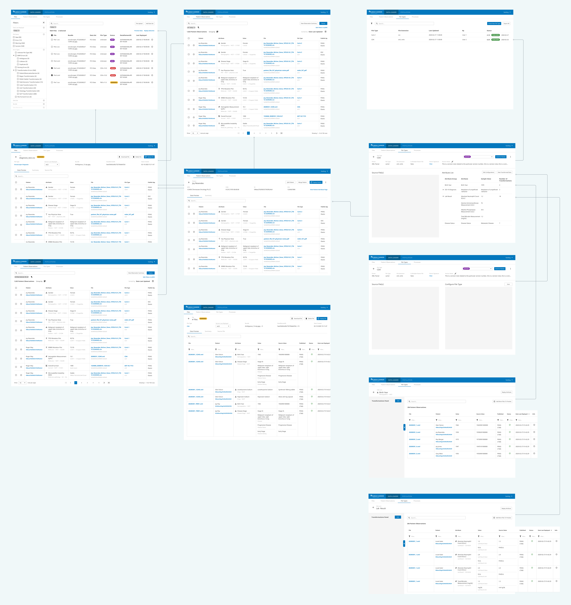
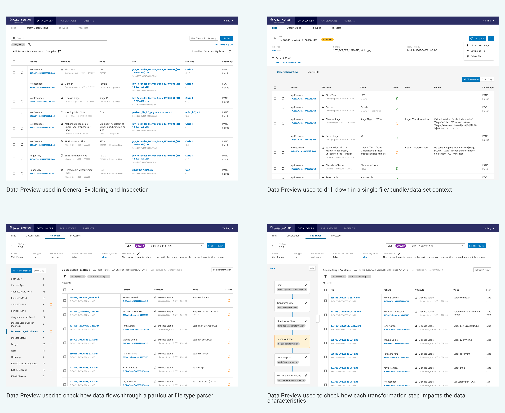

Data Management
Deploy an accessible, intuitive, and scalable enterprise data management platform to prepare data of any scale ready to use
Overview
As a biomedical data platform, Genospace specializes in clinical trial matching and providing clinical-genomic data aggregation for large-scale drug development analysis. The successful running of the platform and the services rely upon accurate, well-structured data that has been formatted for application needs. Every day, there are more than 30,000 files of different formats from EHR system, molecular profiling vendors, and clients flowing into Genospace's platform. There is a dedicated data engineering team responsible for processing, cleaning and preparing data from all the sources to power the platform's core functions.
Ingress ® by Genospace is an extensive data ingest and preparation application that's used by the data engineering team. While it's integrated with the Genospace core platform, it faces limitations and lacking of certain features as the platform scales. We also see a need from external data users to prep and transform data on their own. How do we reduce the complexity of working with data and accelerate time-to-production for our platform? I led the design process to build a more accessible, intuitive, and stream-lined data management tool.
My Role
I was the sole designer leading the Data Management Initiative.
My effort included leading the user research, defining the end-to-end solutions, and devloping all the screen designs.
I also worked with our data management product owner to prioritize design solutions into release candidates.
Tools & Methods
Figma
Design Workshop
Problem
How to reduce the time cost and the complexity of working with data without compromising quality?
The data cleaning and preparation process of extracting data from different file formats, converting sets of data values from a source format to a format consistent for a destination data system has long been considered tedious, complicated, and time-consuming. Yet, it's crucial to the successful running of our application and the services we provide, especially to the analytics platform users.
Every day, Genospace platform receives more than 30,000 files of various formats from hospitals, EHR companies, and molecular profiling vendors. When it comes to complex or large volumes of data, the work would demand advanced data science skills and knowledge of organizational data. The data engineering team at Genospace works dedicatedly to process, clean, and prepare the data so it's consistent and of high quality. However, there are many tedious and repetitive steps in the process that are not the best use of data engineers' time. Additionally, data engineers also need to ues multiple tools and many workarounds in order to prepare data efficiently. Lastly, as we work with more clients, we want to open up Ingress as a powerful tool for external users, so they can load data and prepare data by themselves. Therefore, it's critical to radically accelerate the process of transforming data and reduce the time it takes to analyze information and get the most out of the data.
This year, Genospace platform became an FDA-validated system, the data management initiative is also aligned with the company's goal of increasing data confidence and opening up new opportunities for data management products and services.
Solution
An enterprise data management platform that efficiently processes, prepares, transforms data of all sources and scales to power clinical research software and analytical services
Data Exploring for A Complete Picture of Your Data
Ingress Data Explorer enables user to explore and validate data with a series of data discovery functions. The exploration process allows user to gain a good understanding for the unique elements of the data such as value distributions and outliers to inform the data transformation and analysis. User can submit search queries, filter data by any fields, view the source document data, and have visual summary of the data. This is a great point for both initiating and validating a data preparation workflow.
Easy-to-use File Parsing & Transformation Configuration
Configuring file type parsers and transforming data are critical in preparing data because files come in all formats with data of all shapes and sizes. Ingress aims to help users quickly configure a parser that extracts data and transforms data into a desired format. Instead of writing complex JSON code to extract and transform data, it is now much more accessible to all kinds of users.
Flexible & Smart Error Resolving for High Data Quality
With data element statuses and file statuses displayed at multiple levels, user can initiate an error resolving or data cleaning workflow at any point. Files that produce similar errors will be aggregated fo user to batch-resolve.
Streamlined Workflow and Collaboration
Always stay in the flow of data preparation work. Within the data engineering team, user can save and share their working data sets or their working queries to teammates for debugging and communicating. There is also a clear file and data transformation configuration versioning workflow that helps a data team better collaborate and work more efficiently.
Research
How did we arrive at the solution?
Our Vision
A data management tool that makes the entire data registering, harmonizing and charactering work much easier and much more efficient
The Research Process
Since data ingesting and cleaning work requires a thorough understanding of many technical aspects and the granular details about data engineering team workflow and the data release processes, I created a user panel that involves all the data engineering team members. I have regular review meetings with them to review design concepts and to collect pain points, requirements, and feedback.
I also did a couple work shadowing sessions to observe their daily workflow: how to prepare and transform data, how to resolve errors, how to perform data releases. With an extensive study with our data engineer user panel, it became evident that there were some major pain points in current Ingress.
1. Users don't have a good visibility of data they transformed making inspection & validation difficult
2. Only working and viewing one file/one bundle at a time - limited scale
3. Gaps & broken pieces in the whole workflow, need to create workarounds
4. Steady learning curve to onboard new users therefore making it hard to open up to more users
5. A lot of code and script writing that can be error-prone
In addition to the constant user research, I also did an extensive study on competitor produts. The research showed that in order to open up Ingress as a powerful data managing tool to clients and external users, we need to step up our game in making the data ingest, data transformation and the data validating process easier and more accessible. With a fully-improved application, Genospace data team will be able to work with data of much larger sizes and be able to deliver high-quality data consistently.
Discovery & Design Workshop
At the beginning of the idea exploration stage, we hosted 2 design workshops to help us: 1. define the scope and the concrete problems we want to address; 2. brainstorm on ideas and solutions to solve the problems we came up with.
In the workshop we discovered that to get high-quality data, we need to approach the data transformation in a more streamlined way, monitor changes and automate identifiaction of data and file types by creating recipes from standards and best practices.
Opportunity
Not only was this project important because it was one of the top requests we continued to hear from our own data team, but it also provided tremendous value to the business. Since at the same time, Genospace has made the effort to turn Ingress into a validated system, which opens up much more opportunities for working with bio-pharmaceutical data. Therefore it's critical that we enhance the capabilities of Ingress so that it can handle the new complexity of the work.
The opportunity for Genospace was specific: on the one hand we enhance the Ingress functions and capabilities to equip our data engineering team so they can provide stellar data services at a much larger scale; on the other hand by utilizing the Ingress platform and making data preparation much easier, we could potentially open up Ingress to external users and package it as a great data transformation tool along with our analytics products. We visualized the implication of the data management process and how it works as a key component of Genospace ecosystem.
More specifically, we prioritized a few key solutions that would be most valuable and feasible, and they can be broken down into release candidates that go into development:
Data exploring for a complete picture of the data to explore and validate data with a series of data discovery functions
Easy-to-use file parsing & transformation configuration
Flexible and smart error resolving for high data quality
Streamlined workflow and collaboration to enable users to save and share their working data sets or their working queries to teammates for debugging and communicating
Clear file and data transformation configuration versioning workflow that helps a data team better collaborate and work more efficiently.
By the time I wrote this case study, we have successfully launched 3 new features and are in the process of gaining another round of user feedback for continuous improvement.
The Design
Exploration and Iteration
The design and the concept development of Ingress data management solution is a rather complicated process that involves much detailed workflow mapping and interaction design. It also involves extensive collaboration with the engineering team to work with certain technologies and constraints. I met regularly with the product engineer team and the infrastructure team to get technical feasibility feedbcak about my design, and the feedback helped shape the final design solutions. A few key design decisions I made throughout this process include:
Stitch the Workflow Together
One of the main pain points I wanted to address was the gaps and broken links in the old data management workflow. Due to lack of proper collaboration workflow and data inspection capabilities. Data engineering users had to work in a test environment to experiment and test data preparation process before finalizing it in production. Therefore, my first design exploration was on how to stitch all different functionalities together and making it easier to initiate a transformation work or to resolve an error.
Creating Modular Components
Ingress data management platform is such a larger piece to design for and requires a lot of time and effort in back-end planning and implementation. From the design perspective, it is most critical and feasible to use modular design principles and to design components and functionalities that can be applied in multiple places. This helps save a lot of engineering effort, it also helps reinforce a functionality for users and creates a consistent look and feel throughout the entire platform.
Take the "data exploring view" as an example, it's a feature that's needed in multiple steps in the whole process of registering data, transforming data and validating data. Therefore, when desigining the table, I treated this view as a module that can be tailored to different use cases at different places of the platform.
1. It can be used as a landing view for users to discover exactly what data is loaded into the platform and to quickly identify value distributions and outliers that can inform a transformation and analysis workflow. 2. It is also used when user dives into individual file, a bundle of files or different data sets to give user a overview of the data within a particular scope. 3. More importantly in the actual file parser configuration and the data transformation work, "data exploring view" is again used to give users the transparency on how they shape and transform the data.
Outcome
It's really exciting to have all the prolonged effort (more than 6 months) I have put on this project come together to be launched and used by actual users and clients. This project has truly got me dive into the data management domain and I have had so much fun learning and designing for data intensive applications. As of May 2020, most of the features that were part of this vision (data exploring, smart transformation configuration, seamless versioning and collaboration workflow) have been released or are in the pipeline of implementation. This will still be an ongoing process as we started to monitor usage data, metrics and collect user feedback for continuous improvement.
Thank you for your time reading this case study : )